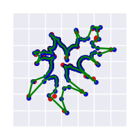

Solving Traveling Salesman with The Elastic Net Algorithm
For those of you unfamiliar with the Traveling Salesman Problem, it is a classic problem in computer science in which we would like to find the shortest possible path among a group of cities. It seems easy enough, however the problem is NP-Hard, and therefore no efficient algorithm exists to solve it. Rather, there are a number of heuristics that have been devised to approximate the solution.
What is The Elastic Net Algorithm?
The Elastic Net Algorithm is one such heuristic for approximating a solution to TSP. It is not the best algorithm for solving it, but it is interesting in concept, and fun to code and visualize.
The algorithm itself is quite simple. Cities for a given instance of the problem are represented as coordinate pairs (theoretically this could work in higher dimensions as well but I have not tried it myself), and a ring of “neurons” with prespecified radius is placed at the center of the cities. The neurons can be thought to be connected by an elastic, and so at each iteration, this elastic stretches until it envelops the cities, finally giving a possible tour.
The images below show a run of the algorithm over the cities of Djibouti

The heart of this algorithm is given by the update step
where
This seems complicated at first, but is in fact quite intuitive. The neurons have three forces acting upon them at each iteration, given by each term in the above equation
1. Each city exerts a force on neuron with a weight . The closer a city is, the more weight it has, and so it attracts a neuron more. The total contribution of this force across all cities is controlled by the parameter . This force acts to pull the neurons out and stretch the elastic about the cities.
2. The second term serves to keep the neurons evenly distributed about the elastic, and hence favor shorter paths. The further the distance between a pair of neurons , the stronger the weight .
3. Finally, each neuron is acted upon by its neighbors; hence the third term can be thought of as a tension on the elastic which serves to keep neighboring neurons together. It is controlled by the parameter , but the scale parameter also influences it.
is different from the other parameters however; it is calculated each iteration as the average squared distance between each city and its closest point on the tour. Basically, it serves to make it so as neurons approach a city, they are more affected more by it than other cities, hence “scaling” the algorithm.
Code
I use python 3 with numpy for my implementation. I will present the ElasticNet class and explain the code in it along the way. The full implementaion can be found here.
Class Definition and init
Here I simply import the necessary libraries and give a class definition along with its constructor, containing the hyperparameters needed for the algorihm
import numpy as np
from scipy.spatial.distance import cdist
import itertools
class ElasticNet:
def __init__(self, n_iters=30, neuron_factor=2.5,
alpha=0.4, beta=2.0, radius=0.1):
self.n_iters = n_iters
self.neuron_factor = neuron_factor
self.alpha = alpha
self.beta = beta
self.radius = radiusFitting the model
Fits an instance of TSP with ENA. takes a numpy array cities , initializes the neurons, and proceeds to update them for n_iters iterations
def fit(self, cities):
self.cities = cities
self.neurons = init_neurons(cities.shape[0] * self.neuron_factor)
for i in range(self.n_iters):
self.iter = i + 1
self.update_weights()
self.update_neurons()Neuron Initialization
This method evenly spaces size neurons in a ring about the center of the cities.
linspace evenly spaces size neurons from to (circumference of a circle in radians), the False argument indicated that we do not it to include
Next, I transform the linspace into x and y coordinates by taking the cos and sin of the linspace, scale the coordinates such that the ring will be of the specified radius, and translate it such that it lies in the center of the cities.
Finally I return the transpose such that it will be a matrix with shape [size, 2]
def init_neurons(self, size):
center = self.cities.mean(axis=0)
neurons = np.linspace(0, 2*np.pi, size, False)
neuron_ring = np.array([np.cos(neurons), np.sin(neurons)])
neuron_ring *= self.radius
neuron_ring += center[:,np.newaxis]
return neuron_ring.TWeight and Scale Updates
This method updates the weights and . I first find the delta between each pair, which is used later.
cdist returns the the euclidean distance for each pair (in testing cdist was much faster than computing this myself). The following lines do the same thing, but for the nearest neuron to each city. is updated as specified above, and we set a lower bound for it, as the solution diverges if K becomes too small. Finally, I compute and normalize the weight matrices.
def update_weights(self):
def phi(d, K):
return np.exp(-d**2 / (2*K**2))
self.delta = self.cities[:,np.newaxis] - self._neurons
self.dists = cdist(self._cities, self._neurons)
near_neurons = self.neurons[np.argmin(self.dists, axis=1)]
self.near_delta = self.cities - near_neurons
self.near_d2 = np.sum(self.near_delta**2, axis=1)
self.near_dists = cdist(near_neurons, self.neurons)
self.update_K()
self.S = phi(self.near_dists, self.K)
self.S /= np.sum(self.S, axis=1)[:,np.newaxis]
self.W = phi(self.dists, self.K)
self.W /= np.sum(self.W, axis=1)[:,np.newaxis]
def update_K(self):
self.K = np.mean(self._near_d2)
if self.K < 0.01:
self.K = 0.01Neuron Update
update_neurons() is pretty self explanatory; it is simply the update step we defined earlier. einsum in city_force() is a cool function (albeit somewhat difficult to understand) - basically it gives us a very efficient way to perform opertaion on multi-dimensional arrays; in this case multiplying every slice of W and delta. In other words, we tell einsum to multiply both axes of W by the first two of delta, then sum along the first axis, i. In neuron_force() the first and last neurons are added to the beginning and end so we can calculate the term in a single comprehension.
def update_neurons(self):
fw,fs = self.city_force()
term1 = self.alpha * fw
term2 = self.alpha * fs
term3 = self.beta * self.K * self.neuron_force()
self.neurons += (term1 + term2 + term3)
def city_force(self):
return np.einsum('ij,ijk->jk', self.W, self._delta),
np.dot(self.S.T, self.near_delta)
def neuron_force(self):
nshape = self.neurons.shape
temp_neurons = np.concatenate((self.neurons[-1,np.newaxis],
self.neurons,
self.neurons[0,np.newaxis]))
return np.array([
(temp_neurons[i+1] + temp_neurons[i-1] - 2 * temp_neurons[i])
for i in range(1, temp_neurons.shape[0]-1) ])Conclusion
That is all there is to it. The code above doesn’t include the driver module, visualization, or how to construct the solution. If you are interested, check out the full implementation! The repo also contains a bevy of other solutions in a wide variety of languages.